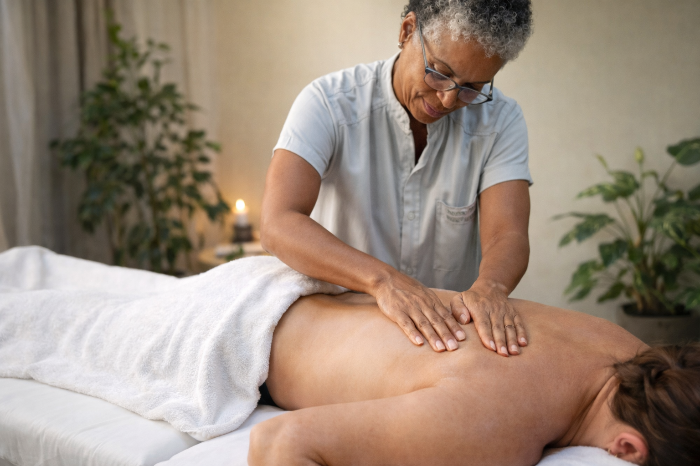
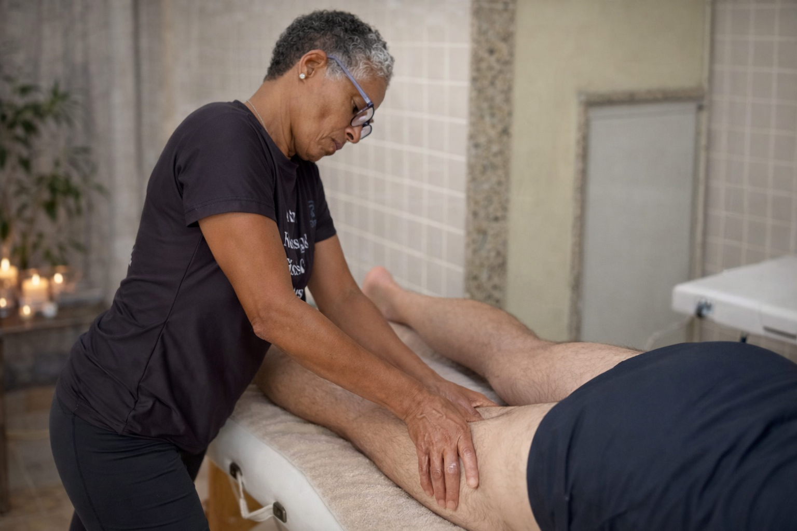
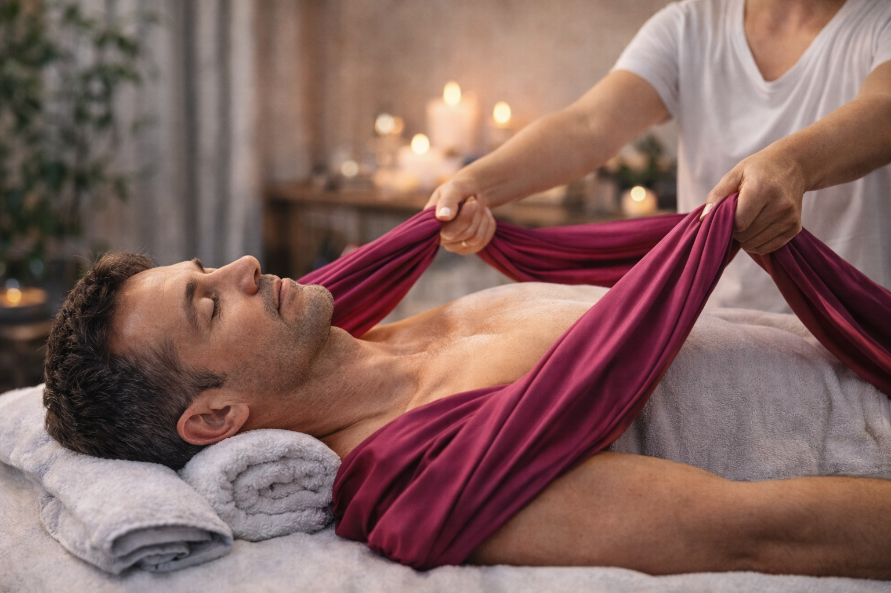
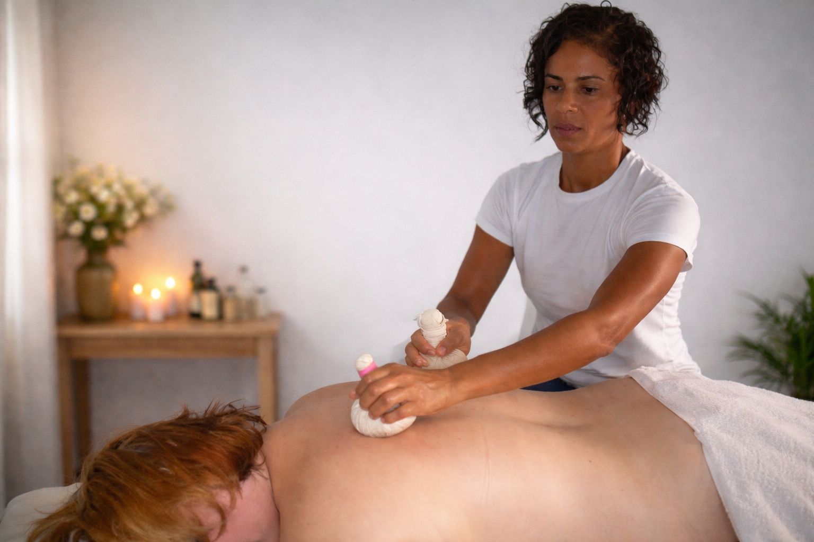
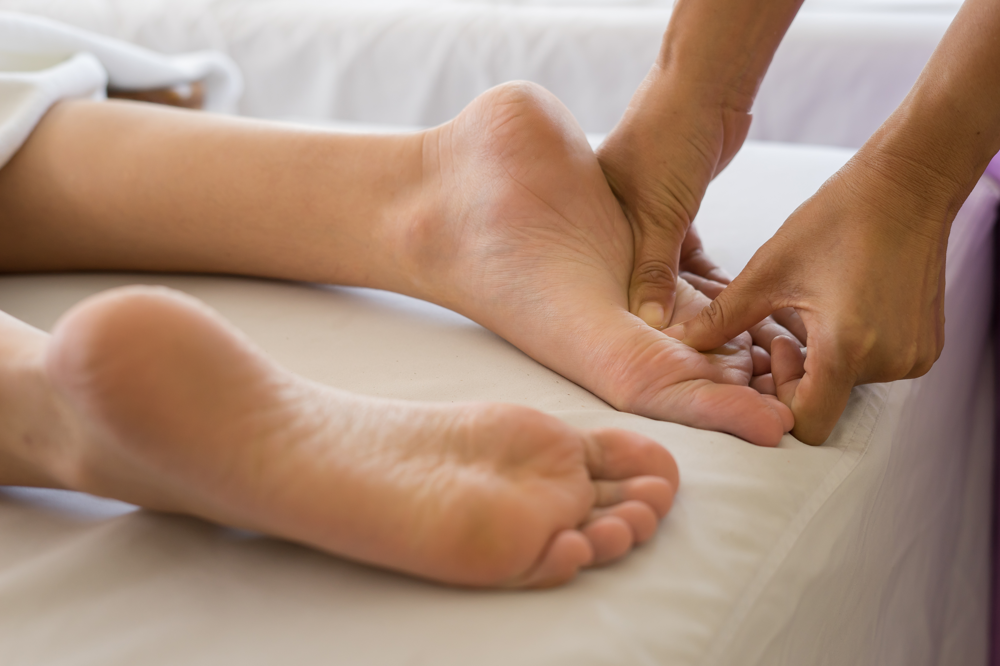
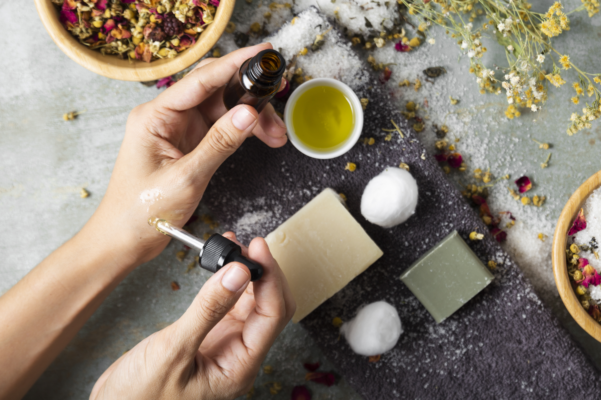

Opções pensadas para diferentes momentos, necessidades e contextos.

A massagem sueca, também conhecida como massagem relaxante muscular, é uma técnica clássica que utiliza movimentos ritmados para promover relaxamento profundo e bem-estar. Ideal para aliviar o estresse, melhorar a circulação e proporcionar uma sensação de leveza no corpo.

A massagem terapêutica é focada no alívio de dores e tensões musculares, promovendo recuperação e equilíbrio corporal. Com técnicas personalizadas, ajuda a melhorar a mobilidade, além de ajudar no tratamento de patologias e proporcionar bem-estar físico e mental.

A drenagem linfática é uma técnica suave que estimula o sistema linfático, ajudando a reduzir edemas (inchaços) e eliminar toxinas do organismo. Com movimentos leves e ritmados, melhora a circulação e é uma essencial aliada na recuperação pós cirúrgica, especialmente em procedimentos cosméticos.

Massagem voltada para preparo, recuperação e relaxamento muscular, ideal para praticantes de atividades físicas. Auxilia na prevenção de lesões, redução de tensões e melhora do desempenho e da recuperação pós-treino, além de contribuir na flexibilidade.
Massagem ideal para eventos corporativos, oferecendo atendimentos rápidos focados no alívio de tensões em costas, ombros e pescoço. Proporciona relaxamento imediato e bem-estar, tornando a experiência mais leve e agradável para colaboradores e participantes.

Massagem realizada com o auxílio de tecidos que promovem alongamento suave e movimentos envolventes pelo corpo. A técnica favorece o relaxamento profundo, melhora da flexibilidade e liberação de tensões, proporcionando uma experiência terapêutica leve e acolhedora.

Massagem realizada com trouxinhas aquecidas de ervas aromáticas que promovem relaxamento profundo e sensação de acolhimento. O calor associado aos movimentos terapêuticos auxilia no alívio de tensões musculares, melhora da circulação e equilíbrio do corpo e da mente.

Técnica que trabalha com estímulo de pontos específicos das mãos e pés que se conectam a diferentes partes do corpo, desde a coluna até órgãos internos. A técnica promove relaxamento profundo, equilíbrio energético e auxilia no alívio de tensões, proporcionando bem-estar físico e emocional.
Aplicação terapêutica das cores para promover equilíbrio físico, emocional e energético. Utiliza diferentes frequências cromáticas como recurso complementar de relaxamento, harmonização do organismo e fortalecimento do bem-estar integral.

Uso terapêutico de óleos essenciais naturais para promover relaxamento, equilíbrio emocional e bem-estar geral. As essências são aplicadas de forma integrada aos atendimentos, potencializando os efeitos da massoterapia e proporcionando uma experiência sensorial acolhedora.